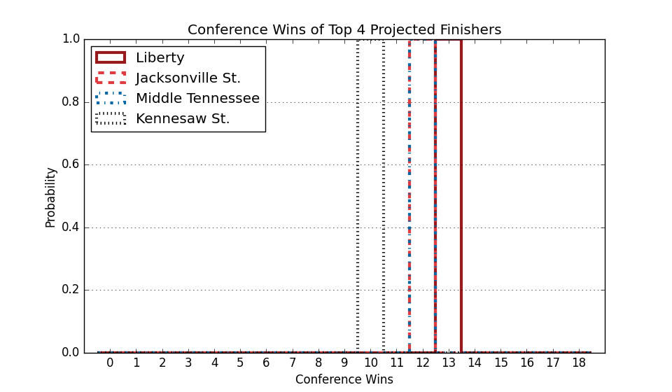

Conference USA
Updated with games through Saturday, January 17
Conference Projections
Based on 10,000 simulations of the remaining season.
Tiebreaking was done using the
Big Ten tiebreaking procedures.
| Conference USA |
Current Record |
Projected Record |
Projected Finish (% odds, with tiebreakers) |
|
Team |
Conf. |
Overall |
Conf. |
Overall |
1st | 2nd | 3rd | 4th | 5th | 6th | 7th | 8th | 9th | 10th | 11th | 12th |
| 1. |
Liberty (101) |
7 - 0 |
12 - 3 |
16.2 - 3.8 |
21.2 - 6.8 |
78.5 | 14.4 | 4.9 | 1.5 | 0.5 | 0.2 | 0.0 | 0.0 | | | | |
| 2. |
Middle Tennessee (121) |
5 - 2 |
8 - 7 |
13.3 - 6.7 |
16.3 - 11.7 |
14.0 | 38.2 | 20.0 | 12.4 | 7.7 | 4.1 | 2.1 | 1.0 | 0.4 | 0.1 | 0.0 | |
| 3. |
Sam Houston St. (107) |
3 - 4 |
8 - 7 |
12.6 - 7.4 |
17.6 - 10.4 |
3.4 | 19.3 | 26.1 | 21.0 | 14.3 | 8.7 | 4.4 | 2.0 | 0.6 | 0.3 | 0.1 | |
| 4. |
New Mexico St. (127) |
3 - 4 |
7 - 7 |
11.7 - 8.3 |
15.7 - 11.3 |
1.7 | 11.8 | 20.3 | 21.1 | 17.2 | 11.4 | 8.2 | 4.4 | 2.4 | 1.3 | 0.3 | 0.0 |
| 5. |
Kennesaw St. (153) |
4 - 3 |
9 - 6 |
11.2 - 8.8 |
16.2 - 11.8 |
1.4 | 9.1 | 14.3 | 18.9 | 19.4 | 15.4 | 10.2 | 6.0 | 3.2 | 1.5 | 0.6 | 0.1 |
| 6. |
Western Kentucky (158) |
4 - 3 |
9 - 7 |
10.4 - 9.6 |
15.4 - 13.6 |
0.9 | 4.6 | 7.7 | 11.5 | 16.0 | 19.7 | 16.6 | 11.5 | 7.2 | 3.2 | 1.0 | 0.1 |
| 7. |
Missouri St. (214) |
4 - 3 |
7 - 8 |
9.8 - 10.2 |
12.8 - 15.2 |
0.2 | 1.7 | 4.2 | 7.5 | 11.8 | 16.9 | 19.6 | 16.6 | 11.2 | 6.8 | 3.2 | 0.3 |
| 8. |
Jacksonville St. (242) |
4 - 3 |
6 - 9 |
8.7 - 11.3 |
10.7 - 17.3 |
0.0 | 0.6 | 1.5 | 3.2 | 6.0 | 9.9 | 14.6 | 19.8 | 18.9 | 15.2 | 9.1 | 1.2 |
| 9. |
FIU (185) |
2 - 5 |
6 - 9 |
8.3 - 11.7 |
12.3 - 15.7 |
| 0.3 | 0.8 | 2.0 | 4.4 | 8.1 | 13.0 | 18.5 | 21.8 | 18.2 | 10.9 | 2.0 |
| 10. |
Louisiana Tech (254) |
3 - 4 |
7 - 8 |
7.3 - 12.7 |
11.3 - 16.7 |
| 0.0 | 0.3 | 0.7 | 2.0 | 3.7 | 7.3 | 12.2 | 18.6 | 26.4 | 24.3 | 4.6 |
| 11. |
UTEP (269) |
2 - 5 |
3 - 12 |
6.6 - 13.4 |
7.6 - 20.4 |
| | 0.1 | 0.2 | 0.7 | 1.9 | 3.9 | 7.7 | 14.5 | 23.5 | 39.3 | 8.2 |
| 12. |
Delaware (294) |
1 - 6 |
5 - 12 |
3.8 - 16.2 |
7.8 - 22.2 |
| | | | | 0.0 | 0.1 | 0.4 | 1.1 | 3.6 | 11.2 | 83.5 |
Weekly Changes |
| 1. |
Liberty (101) |
|
+10.5 | -7.2 | -1.7 | -0.9 | -0.4 | -0.2 | -0.1 | +0.0 | +0.0 | +0.0 | +0.0 | +0.0 |
| 2. |
Middle Tennessee (121) |
|
-10.1 | -2.2 | +4.1 | +3.8 | +2.8 | +0.9 | +0.5 | +0.2 | +0.0 | -0.0 | -0.0 | -0.0 |
| 3. |
Sam Houston St. (107) |
|
+2.2 | +10.5 | +8.2 | +1.7 | -2.5 | -4.2 | -5.8 | -4.6 | -3.5 | -1.5 | -0.5 | -0.1 |
| 4. |
New Mexico St. (127) |
|
-0.3 | +4.7 | +3.3 | +3.9 | +1.9 | -1.6 | -2.4 | -3.4 | -3.3 | -1.5 | -0.9 | -0.5 |
| 5. |
Kennesaw St. (153) |
|
+0.9 | +5.3 | +5.8 | +7.8 | +6.1 | +1.0 | -3.5 | -7.1 | -6.9 | -5.0 | -3.0 | -1.2 |
| 6. |
Western Kentucky (158) |
|
-2.1 | -6.2 | -9.0 | -4.7 | +0.9 | +6.8 | +6.5 | +3.7 | +2.5 | +1.3 | +0.3 | -0.0 |
| 7. |
Missouri St. (214) |
|
-0.7 | -2.6 | -4.9 | -4.3 | -2.2 | +2.0 | +4.3 | +3.5 | +1.8 | +1.8 | +1.4 | -0.2 |
| 8. |
Jacksonville St. (242) |
|
-0.3 | -1.1 | -3.2 | -3.3 | -3.0 | -2.3 | +0.3 | +3.4 | +2.7 | +4.2 | +3.0 | -0.4 |
| 9. |
FIU (185) |
|
-0.1 | -1.2 | -2.4 | -3.6 | -3.5 | -2.3 | -0.6 | +2.0 | +3.3 | +5.1 | +4.0 | -0.5 |
| 10. |
Louisiana Tech (254) |
|
-0.0 | +0.0 | -0.0 | -0.1 | +0.2 | +0.3 | +1.8 | +2.8 | +4.9 | +3.1 | -0.7 | -12.3 |
| 11. |
UTEP (269) |
|
+0.0 | +0.0 | -0.1 | -0.2 | -0.2 | +0.3 | +0.3 | +1.5 | +3.1 | +2.2 | +10.7 | -17.8 |
| 12. |
Delaware (294) |
|
+0.0 | -0.0 | -0.0 | -0.1 | -0.2 | -0.7 | -1.3 | -2.2 | -4.6 | -9.8 | -14.1 | +33.1 |
This table gives the probability of earning at least a share of a given place.
So there are no tiebreakers and there can be multiple first place teams, for example.
|
Projected Finish (% odds, no tiebreakers) |
|
Team |
Outright |
1st | 2nd | 3rd | 4th | 5th | 6th | 7th | 8th | 9th | 10th | 11th | 12th |
| 1. |
Liberty |
74.8 | 87.0 | 9.5 | 2.4 | 0.8 | 0.2 | 0.1 | 0.0 | | | | | |
| 2. |
Middle Tennessee |
7.2 | 15.5 | 41.2 | 19.6 | 11.5 | 6.8 | 3.4 | 1.4 | 0.4 | 0.1 | 0.0 | | |
| 3. |
Sam Houston St. |
2.3 | 7.0 | 29.1 | 28.2 | 16.8 | 9.4 | 5.5 | 2.4 | 1.0 | 0.4 | 0.1 | 0.0 | |
| 4. |
New Mexico St. |
0.6 | 2.7 | 16.4 | 21.5 | 21.8 | 16.5 | 10.0 | 6.2 | 2.9 | 1.4 | 0.5 | 0.1 | 0.0 |
| 5. |
Kennesaw St. |
0.8 | 2.4 | 13.2 | 17.0 | 18.2 | 17.4 | 13.7 | 9.2 | 5.1 | 2.5 | 0.9 | 0.4 | 0.0 |
| 6. |
Western Kentucky |
0.4 | 1.3 | 6.4 | 10.3 | 14.4 | 18.5 | 17.9 | 14.2 | 8.8 | 5.1 | 2.3 | 0.7 | 0.0 |
| 7. |
Missouri St. |
0.1 | 0.4 | 3.6 | 6.8 | 10.5 | 15.2 | 18.1 | 18.0 | 13.0 | 8.2 | 4.4 | 1.7 | 0.1 |
| 8. |
Jacksonville St. |
0.0 | 0.1 | 1.0 | 2.7 | 4.7 | 8.6 | 12.1 | 16.4 | 19.2 | 18.0 | 11.6 | 5.3 | 0.5 |
| 9. |
FIU |
0.0 | 0.0 | 0.5 | 1.2 | 3.4 | 6.4 | 10.7 | 15.2 | 19.2 | 19.2 | 14.8 | 8.3 | 1.1 |
| 10. |
Louisiana Tech |
0.0 | | 0.1 | 0.5 | 1.4 | 3.0 | 5.6 | 10.2 | 13.8 | 18.4 | 24.5 | 19.9 | 2.7 |
| 11. |
UTEP |
0.0 | | 0.0 | 0.1 | 0.5 | 1.4 | 3.0 | 6.4 | 10.0 | 16.4 | 24.5 | 31.6 | 6.2 |
| 12. |
Delaware |
0.0 | | | | | 0.0 | 0.1 | 0.2 | 0.7 | 1.7 | 5.4 | 15.6 | 76.4 |

